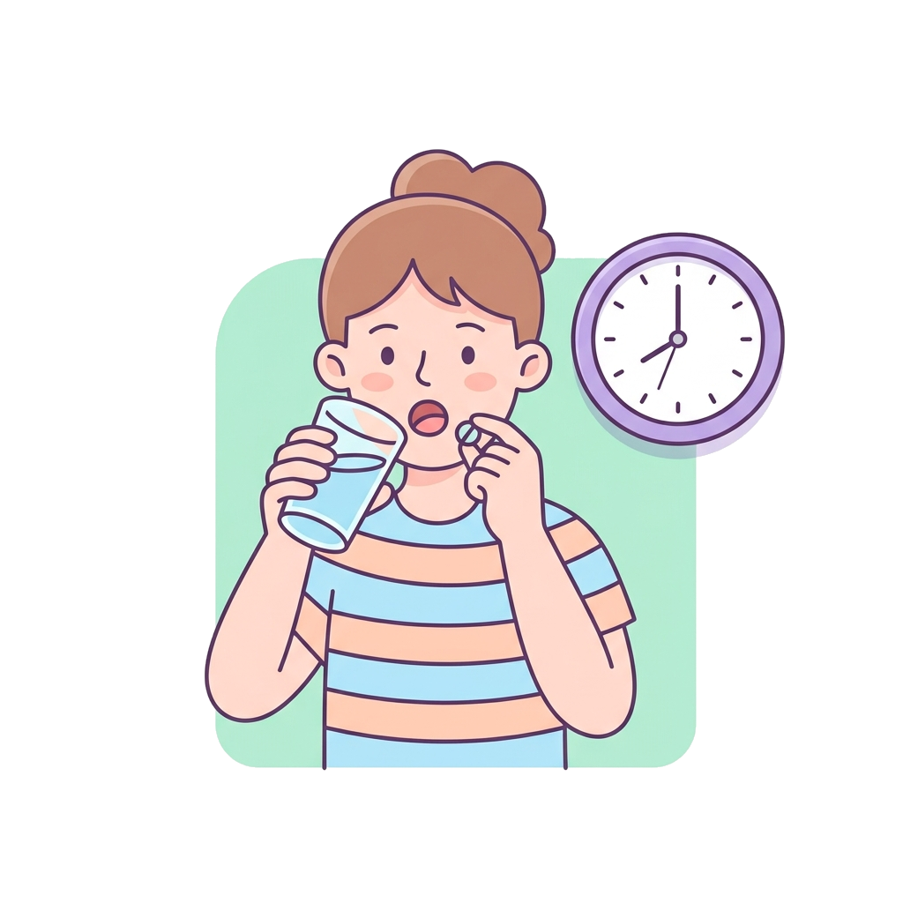
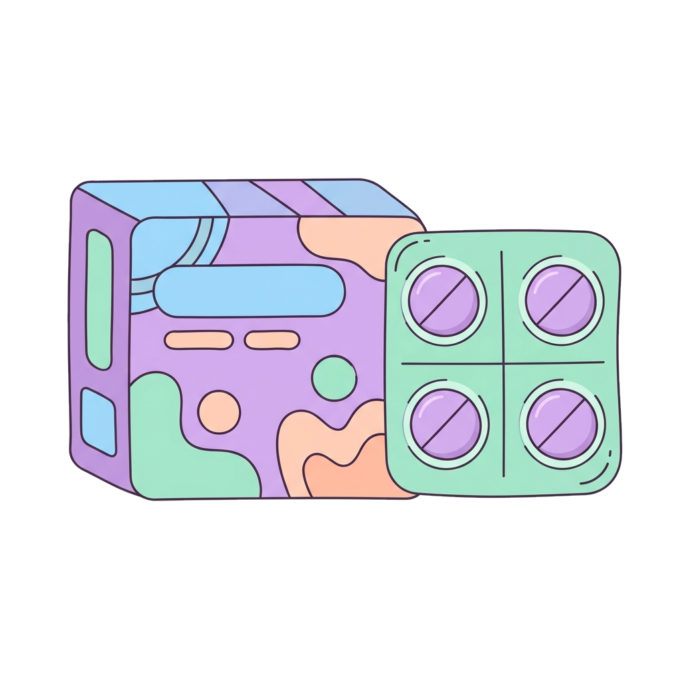
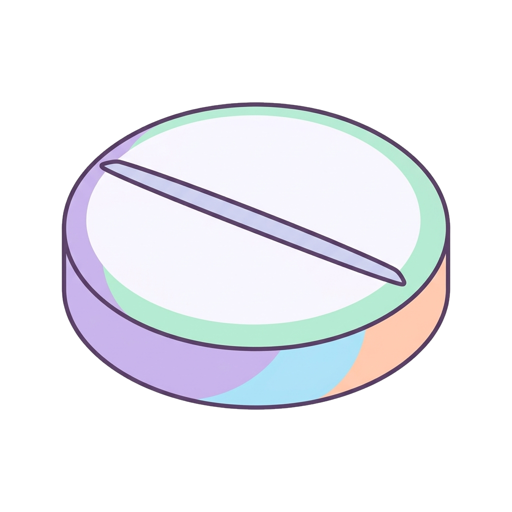
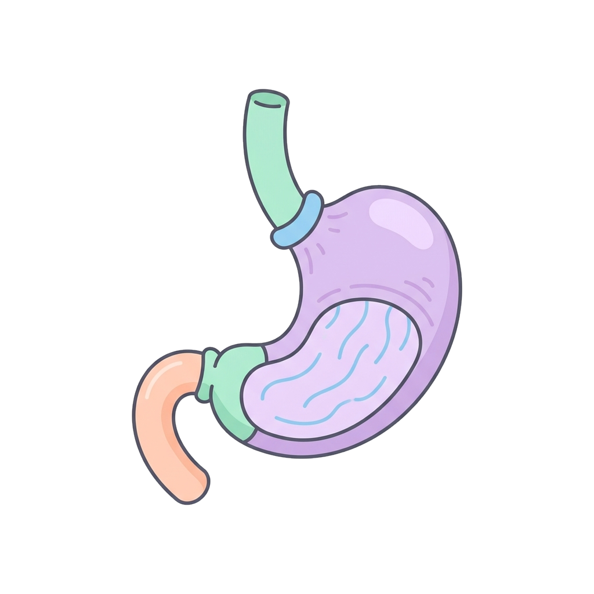

Chapter 6 · Pharmacokinetics
Pharmacokinetics
— drug + movement
The branch of pharmacology that studies the journey and fate of the drug in the body. In short: what the organism does to the drug over time.
THE FOUR STAGES: ADME
 2. Distribution
2. Distribution
 3. Metabolism
3. Metabolism
(biotransformation)

1. Absorption(biotransformation)

4. Excretion
ABSORPTION
The passage of the drug from its site of administration into the bloodstream, reaching the systemic circulation.

Administration
→

Absorption
→
Systemic Circulation
WHAT DOES IT DEPEND ON?
- Route of administration: Intravenous (IV) route bypasses absorption (100% immediate).
- Drug properties: Lipid solubility, molecular size, and ionization state.
- Site conditions: Local pH, blood perfusion, and available surface area.
BIOAVAILABILITY (F)
The percentage fraction of an administered dose that reaches systemic circulation intact and is available to produce clinical effects.